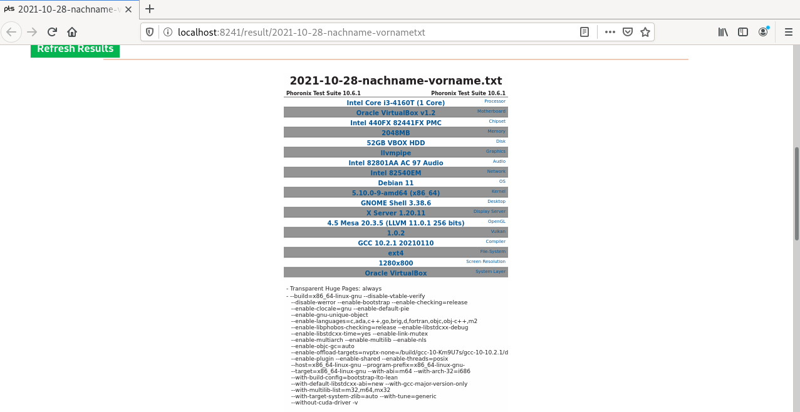

The Phoronix Test Suite is a comprehensive testing and benchmarking platform available for the Linux operating system. This software is designed to carry out both qualitative and quantitative benchmarks in a clean, reproducible, and easy-to-use manner. It consists of a lightweight processing core (pts-core) with each benchmark consisting of an XML-based profile with related resource scripts.
The Phoronix Test Suite contains profiles for various individual tests, whereby only external programs are used. When a test is started for the first time, the required programs and data are automatically downloaded from the network and stored in the directory ~/.phoronix-test-suite/installed-tests. Within the Phoronix Test Suite single tests are called benchmarks, whereas combinations of single tests are called suites.
What You'll Learn
In this codelab you will learn
- the Phoronix Test Suite
- how to perform a benchmark run
Where You Can Look Up
Documentation about the Phoronix Test Suite can be found at https://www.phoronix-test-suite.com/?k=home
What You'll need
Guest operation system (Guest OS)
This is the OS of the virtual machine. This will be Debian 11 (Bullseye).
Administators privileges
By default, administrator privileges are required on the Host OS to install additional software. Make sure that you have the required permissions.
For the Guest OS, you will create and manage your own users. These users will therefore be different from the Host's user administration.
Description
First you need to acquire the installation package. One option is to go to the Phoronix download page, and pick a version. Then you can download it to the machine that will be running the tests.
After the download, run the install process:
sudo dpkg -i phoronix-test-suite_10.6.1_all.deb
sudo apt-get install -f
Once the softare suite is installed, run it for the first time. It will ask you a couple of questions and then show you the User Agreement:
phoronix-test-suite
Note, that you have to accept the terms, but do not enable anonymus usage.
Do you agree to these terms and wish to proceed (y/n): Y
Enable anonymous usage / statistics reporting (y/n): N
Documentation
Need help? Use this:
[https://github.com/phoronix-test-suite/phoronix-test-suite/blob/master/documentation/phoronix-test-suite.md](https://github.com/phoronix-test-suite/phoronix-test-suite/blob/master/documentation/phoronix-test-suite.md)
Description
The following command displays the installed system hardware and software information as detected by the Phoronix Test Suite Phodevi Library.
phoronix-test-suite system-info
The output of the command including the option system-info above may look like this:
Phoronix Test Suite v10.6.1
System Information
PROCESSOR: Intel Core i3-4160T
Core Count: 1
Extensions: SSE 4.2 + AVX2 + AVX + RDRAND + FSGSBASE
Cache Size: 3 MB
Core Family: Haswell
GRAPHICS: llvmpipe
OpenGL: 4.5 Mesa 20.3.5 (LLVM 11.0.1 256 bits)
Screen: 1152x864
--More--
The following command displays various hardware/software system properties detected by the Phoronix Device Interface (Phodevi) library.
phoronix-test-suite system-properties
The output of the command with the specific parameter system-properties above may look like this:
AUDIO
identifier = Intel 82801AA AC 97 Audio
CHIPSET
identifier = Intel 440FX 82441FX PMC
CPU
identifier = Intel Core i3-4160T (1 Core)
model = Intel Core i3-4160T
model-and-speed = Intel Core i3-4160T
mhz-default-frequency = 0
default-frequency =
--More--
Description
There are many different tests available to use. You can see what individual tests are available:
phoronix-test-suite list-available-tests
The output of the command with the specific parameter list-available-tests above may look like this:
Phoronix Test Suite v10.6.1
Available Tests
pts/ai-benchmark AI Benchmark Alpha System
pts/aircrack-ng Aircrack-ng Processor
pts/amg Algebraic Multi-Grid Benchmark Processor
pts/aobench AOBench Processor
pts/aom-av1 AOM AV1 Processor
pts/apache Apache HTTP Server System
pts/apache-siege Apache Siege System
pts/appleseed Appleseed System
pts/arrayfire ArrayFire Processor
pts/ashes-escalation Ashes of the Singulairty: Escalation Graphics
--More--
Or you can look for groups (suites) of tests:
phoronix-test-suite list-available-suites
The output of the command including the option list-available-suites above may look like this:
Phoronix Test Suite v10.6.1
Available Suites
pts/audio-encoding - Audio Encoding System
pts/av1 - AV1 System
pts/bioinformatics - Bioinformatics System
pts/browsers - Web Browsers System
pts/cad - CAD System
pts/chess - Chess Test Suite Processor
pts/database - Database Test Suite System
pts/desktop-graphics - Desktop Graphics System
pts/game-dev - Game Development System
pts/hpc - HPC - High Performance Computing System
pts/imaging - Imaging System
pts/java - Java System
pts/network - Networking Test Suite Network
pts/nvidia-gpu-compute - NVIDIA GPU Compute Graphics
--More--
You can get information on a particular test or suite:
phoronix-test-suite info [test]
When you know what test or tests you want to run, you need to install the test dependencies before you can run them.
You can run the install in a separate operation. The following command will install the Java test suite:
phoronix-test-suite install pts/java
Now can get information on pts/java suite:
phoronix-test-suite info pts/java
The output of the command including the parameter pts/java above may look like this:
Phoronix Test Suite v10.6.1
Java
Suite Description: The Java test suite contains all Java-based test profiles within the Phoronix Test Suite.
Run Identifier: pts/java-1.1.1
Suite Version: 1.1.1
Maintainer: Michael Larabel
Status:
Suite Type: System
Unique Tests: 7
Contained Tests:
Sunflow Rendering System
Bork File Encrypter
Java SciMark Computational Test: Composite
Java SciMark Computational Test: Fast Fourier Transform
Java SciMark Computational Test: Jacobi Successive Over-Relaxation
Java SciMark Computational Test: Monte Carlo
Java SciMark Computational Test: Sparse Matrix Multiply
Java SciMark Computational Test: Dense LU Matrix Factorization
DaCapo Benchmark Java Test: Eclipse
DaCapo Benchmark Java Test: H2
DaCapo Benchmark Java Test: Jython
DaCapo Benchmark Java Test: Tradebeans
DaCapo Benchmark Java Test: Tradesoap
Java Gradle Build Gradle Build: Reactor
Java JMH
Renaissance Test: Akka Unbalanced Cobwebbed Tree
Renaissance Test: Savina Reactors.IO
Renaissance Test: Apache Spark ALS
Renaissance Test: Random Forest
Renaissance Test: Apache Spark Bayes
Renaissance Test: Apache Spark PageRank
Renaissance Test: In-Memory Database Shootout
Renaissance Test: Scala Dotty
Renaissance Test: Finagle HTTP Requests
Renaissance Test: Genetic Algorithm Using Jenetics + Futures
Renaissance Test: ALS Movie Lens
33 Tests / 7 Unique Tests
To run the benchmark, execute the following command
phoronix-test-suite run pts/java
Or you can invoke benchmark which will first install and then run the tests for you.
phoronix-test-suite benchmark pts/java
What you will learn:
In this codelab, you will learn
- how to use the phoronix-test-suite
- how to execute a benchmark run
- how to read the results
What you will need:
In this codelab, you will need the following tools:
- phoronix-test-suite
Details of these two (2) tools can be found in the corresponding Codelab named Benchmark.
Scenario
In this codelab, the GuestOS is a Virtual Machine with 2 CPU Cores and 4 GB RAM. The GuestOS is based on Debian 11.0 (Bullseye) with Linux kernel version 5.10.0-8-amd64. The VM is installed and running on the Linux-based Hypervisor VirtualBox, Version 6.1.16 r140961 (QT 5.11.3). THe HostOS is based on Debian 10 (Buster) with Linux Kernel version 4.19.0-17-amd64. The Host hardware is HP Prodesk 400 G1 DN with a Intel Core i3-4160T CPU@3.10GHz, 16GB RAM, and an Intenso SATA III Top 512GB.
Test Run
Open a shell terminal and execute the following command:
phoronix-test-suite run pts/sysbench-1.0.0
First, phoronox will show you a list of new or updated tests. In most cases, you can simple ignore this output.
Updated OpenBenchmarking.org Repository Index
pts: 478 Distinct Tests, 1926 Test Versions, 59 Suites
Available Changes From 8 October To 28 October
Updated Test: pts/aom-av1 v3.2.0 AOM AV1
Updated Test: pts/astcenc v1.3.0 ASTC Encoder
Updated Test: pts/compress-rar v1.2.0 RAR Compression
Updated Test: pts/dav1d v1.11.1 dav1d
New Test: pts/hl2-ep2 v1.0.0 Half-Life 2: Episode Two
Updated Test: pts/kvazaar v1.1.0 Kvazaar
Updated Test: pts/npb v1.4.5 NAS Parallel Benchmarks
Updated Test: pts/opencv v1.1.0 OpenCV
New Test: pts/pyhpc v1.0.0 PyHPC Benchmarks
Updated Suite: pts/hpc v1.1.4 HPC - High Performance Computing
Updated Suite: pts/python v1.1.2 Python
Updated Suite: pts/steam v1.0.4 Steam
Updated OpenBenchmarking.org Repository Index
system: 40 Distinct Tests, 115 Test Versions
Available Changes From 8 October To 28 October
Updated Test: system/compress-zstd v1.5.0 Zstd Compression
Updated Test: system/gimp v1.1.3 GIMP
New Test: system/mysql v1.0.0 MySQL
New Test: system/nginx v1.0.0 Nginx
Updated Test: system/openssl v1.1.2 OpenSSL
Updated Test: system/redis v1.1.0 Redis Memtier / Redis Benchmark
Updated Test: system/selenium v1.0.25 Selenium
Updated OpenBenchmarking.org Repository Index
git: 8 Distinct Tests, 10 Test Versions
Next, if not installed, Phoronix ask you to install the test pts/sysbench-1.0.0. Enter Y to proceed.
[PROBLEM] pts/sysbench-1.0.0 is not installed.
Would you like to stop and install these tests now (Y/n): y
Next, Phoronix starts downloading and installing the test pts/sysbench-1.0.0.
Evaluating External Test Dependencies ..............................................................................................
To Install: pts/sysbench-1.0.0
Determining File Requirements ......................................................................................................
Searching Download Caches ..........................................................................................................
1 Test To Install
1 File To Download [2.14MB]
45MB Of Disk Space Is Needed
38 Seconds Estimated Install Time
pts/sysbench-1.0.0:
Test Installation 1 of 1
1 File Needed [2.14 MB]
Downloading: sysbench-20180728.zip [2.14MB]
Downloading ....................................................................................................................
Approximate Install Size: 45 MB
Estimated Install Time: 38 Seconds
Installing Test @ 15:35:42
Next, Phoronix asks you to select one or more test options. Choose 3 to proceed.
Sysbench 2018-07-28:
pts/sysbench-1.0.0
System Test Configuration
1: CPU
2: Memory
3: Test All Options
** Multiple items can be selected, delimit by a comma. **
Test: 3
Next, Phoronix displays a system information of your GuestOS.
System Information
PROCESSOR: Intel Core i3-4160T
Core Count: 1
Extensions: SSE 4.2 + AVX2 + AVX + RDRAND + FSGSBASE
Cache Size: 3 MB
Core Family: Haswell
GRAPHICS: llvmpipe
OpenGL: 4.5 Mesa 20.3.5 (LLVM 11.0.1 256 bits)
Vulkan: 1.0.2
Screen: 1280x800
MOTHERBOARD: Oracle VirtualBox v1.2
BIOS Version: VirtualBox
Chipset: Intel 440FX 82441FX PMC
Audio: Intel 82801AA AC 97 Audio
Network: Intel 82540EM
MEMORY: 2048MB
DISK: 52GB VBOX HDD
File-System: ext4
Mount Options: errors=remount-ro relatime rw
Disk Scheduler: MQ-DEADLINE
Disk Details: Block Size: 4096
OPERATING SYSTEM: Debian 11
Kernel: 5.10.0-9-amd64 (x86_64)
Desktop: GNOME Shell 3.38.6
Display Server: X Server 1.20.11
Compiler: GCC 10.2.1 20210110
System Layer: Oracle VirtualBox
Security: itlb_multihit: KVM: Mitigation of VMX unsupported
+ l1tf: Mitigation of PTE Inversion
+ mds: Mitigation of Clear buffers; SMT Host state unknown
+ meltdown: Mitigation of PTI
+ spec_store_bypass: Vulnerable
+ spectre_v1: Mitigation of usercopy/swapgs barriers and __user pointer sanitization
+ spectre_v2: Mitigation of Full generic retpoline STIBP: disabled RSB filling
+ srbds: Unknown: Dependent on hypervisor status
+ tsx_async_abort: Not affected
Next, type Y to save the results. Enter a proper name for the result file. Press Enter to preceed without changes for test run / configuration and decription. Phoronix shows up a note that it will start the test run in 5 seconds. You can press CTRL-C if you wish to stop the test.
Would you like to save these test results (Y/n): y
Enter a name for the result file: 2021-10-28-cpu-mem.txt
Enter a unique name to describe this test run / configuration:
If desired, enter a new description below to better describe this result set / system configuration under test.
Press ENTER to proceed without changes.
Current Description: Oracle VirtualBox testing on Debian 11 via the Phoronix Test Suite.
New Description:
[Performance Tip] The powersave CPU scaling governor is currently
in use. It's possible to obtain greater performance if using the
performance governor.
To change behavior, run:
echo performance | tee
/sys/devices/system/cpu/cpu*/cpufreq/scaling_governor
Reference:
https://openbenchmarking.org/result/1706268-TR-CPUGOVERN32
To stop showing performance tips, run: phoronix-test-suite
unload-module perf_tips
Continuing in 5 seconds or press CTRL-C to stop the testing
process.
Next, Phoronix will start the test run. As show, the test run should be completed after 9 minutes, depending on your hardware performance.
Sysbench 2018-07-28:
pts/sysbench-1.0.0 [Test: Memory]
Test 1 of 2
Estimated Trial Run Count: 3
Estimated Test Run-Time: 5 Minutes
Estimated Time To Completion: 9 Minutes [15:46 CEST]
Started Run 1 @ 15:37:55
Started Run 2 @ 15:38:09
Started Run 3 @ 15:38:23
Test: Memory:
5577587.6226
5642796.6075
5648254.9162
Average: 5622879.7154 Events Per Second
Deviation: 0.70%
Comparison to 463 OpenBenchmarking.org samples since 17 August 2018; median result: 8037890. Box plot of samples:
[ |--------##*#####!##############------*--*--*---*-----| ]
^ This Result (30th Percentile): 5622880
4 x 4096 MB DDR3-2133MHz: 19201355 ^
2 x 16384 MB DDR4-2400MT: 17831075 ^
6 x 32 GB DDR4-2933MT: 16585186 ^
6 x 32 GB DDR4-2666MT: 15592851 ^
Sysbench 2018-07-28:
pts/sysbench-1.0.0 [Test: CPU]
Test 2 of 2
Estimated Trial Run Count: 3
Estimated Time To Completion: 1 Minute [15:39 CEST]
Started Run 1 @ 15:38:44
Started Run 2 @ 15:38:58
Started Run 3 @ 15:39:12
Test: CPU:
876.8187
857.7558
873.957
Average: 869.5105 Events Per Second
Deviation: 1.18%
Comparison to 3,019 OpenBenchmarking.org samples since 29 July 2018; median result: 13608. Box plot of samples:
[###!#######------------------*--*-*-----*-----------------------|* ]
Threadripper 3990X: 131854 ^ 2 x EPYC 7742: 210906 ^
2 x EPYC 7502: 111478 ^
2 x EPYC 7452: 106558 ^
^ ARMv8 Neoverse-N1: 94928
Finally, you can see the results of your run in your web browser. However, do not upload the results to OpenBenchmarking.org.
Do you want to view the results in your web browser (Y/n): y
Would you like to upload the results to OpenBenchmarking.org (y/n): n
Phoronix opens the web browser and display the results of the test run.

By clicking on the button Export Benchmark Data you can export the results to various output formats. Scroll down to see details about the SUT. 
Finally, this section shows the benchmark score results.

Clean Up
- To clean up and save disk space, remove the hidden
phoronix-test-suitedirectory:
rm -r /home/icinga/.phoronix-test-suite
- Finally, you can close all open terminals.
This is the end of the hands-on.